As a best practice Business Value should be stored in a centralized location in your Process Director installation. Business values are global objects that can be called by any application, so BP Logix recommends that they be created an stored in a [Business Values] folder at the root level of the Partition.
To create a new Business Value, navigate to the folder into which you want to create the value, then select Business Value from the Create New dropdown in the upper right corner of the Process Director screen.
The Create Business Value screen will appear. Enter a name in the Business Value Name field, then click the OK button to save the new Business Value and open the configuration screen.

There are two main configuration tabs in the Business Value definition that are used to configure it, The Properties and Configure tabs.

The detailed description of the Business Value's purpose, data sources, etc.
The name of the group under which the Business Value's name will be displayed in dropdown menus. This property enables you to organize Business Values into logical groups that will display as submenus in the properties dropdown menus that display in the Condition Builder and elsewhere. This feature operates in the same way as it does for Business Rules.
The Configure Tab shows the general properties that apply to the Business Value. You can select a data source from a SQL database, a Knowledge View, a set of Form Instances, or a REST web service to provide the Business Value. In most cases, you'll choose a single data source, but you can have multiple values extracted from both a SQL and a Knowledge View data source.
Configuration for each of these options resides in a separate tab for each Business Value Type.
The SQL Data Source tab enables you to select a SQL Data Source, and provide a SQL Command for returning data from a SQL database. The Business Value supports most SQL data types (Char, Varchar, Nvarchar, Integer, Double, Short, Byte), and converts the value to a string for the remaining data types.
The user interface for this tab will be somewhat different for v6.1.500 and higher. Both UI conventions and properties are described by version below.
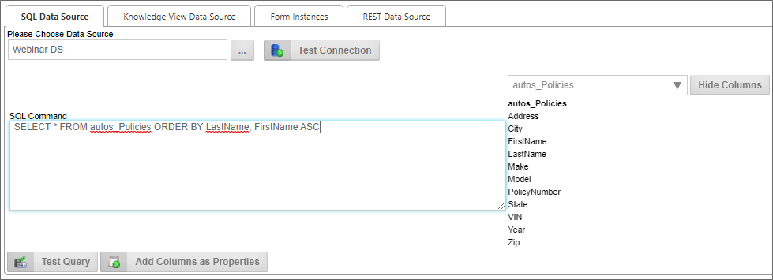
A Content Picker control that enables you to pick the Datasource from which the data will be extracted.
Clicking this button will attempt to connect to the selected Datasource to confirm that the connection to the Datasource works.
Once a valid Datasource has been selected, a list of database tables associated with the Datasource will fill the dropdown. If you select a table from the dropdown, a list of table columns will appear on the right side of the SQL Command text box, in the Database Column field.
Enter the SQL command that will select the data to be set as the Business Value.
 While the system will accept any valid SQL command, BP Logix very strongly recommends that you limit the use of Business Values to SELECT commands. Updating, deleting, and inserting data should be done separately, through the appropriate Custom Task/Datasource.
While the system will accept any valid SQL command, BP Logix very strongly recommends that you limit the use of Business Values to SELECT commands. Updating, deleting, and inserting data should be done separately, through the appropriate Custom Task/Datasource.
Displays a list of database columns in the table selected from the Database Table dropdown.
Clicking this button will show or hide the columns in the Database Column property.
Clicking this button will run the SQL query in the SQL Command property against the database to confirm that the query works properly.
For Process Director v5.44.703 and higher, the Test Query button will display up to 100 rows of sample data from a SQL Datasource in the Business Value definition. The data will be displayed in a SQL Test Results section on the page. This section is hidden until the Test Query button is clicked.
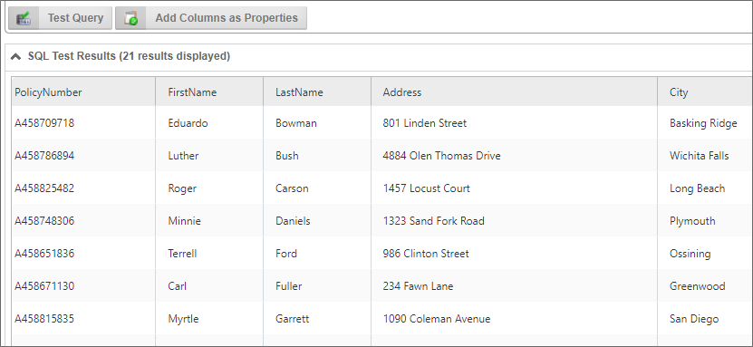
For Process Director v5.44.703 and higher, this button will automatically add every column returned by the SQL statement as a Business Value property in the Properties section of the page. This feature eliminates the need to manually create each property.
For Process Director v6.1.500 and higher, the SQL Data Source tab uses Microsoft's Monaco Editor (specifically for SQL syntax) to create, format, validate, and test SQL statements. This SQL editor replaces the plain input box and drodown controls used in previous versions. The editor enables a more full-featured editing experience for SQL Business Values. The Monaco Editor supports essential features such as syntax highlighting, line numbering, auto-completion, comment handling, and formatting support. The Monaco editor is the code editor used for SQL and other programming languages in Microsoft's free Visual Studio Code text editor.
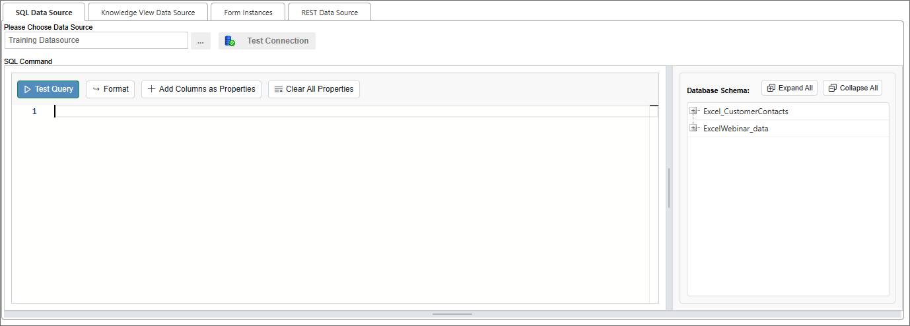
The left pane of the Monaco editor contains the code window into which you can place your SQL statement, while the right pane displays a Treeview of all the table that are accessible from the SQL data source you configure. In the example above, the Training Datasource enables access to two tables from the internal User Database. Between the two panes, and along the bottom of both panes, resizable borders enable you to click and drag to change the relative widths of the two panes, or to change the vertical height of the editor, respectively.
In the right pane, Expand All and Collapse All buttons enable you to show or hide all of the elements in the table treeview.
The Monaco editor adds Intellisense to code writing. For example, typing in "sel" will display the Intellisense menu that contains the SELECT command.
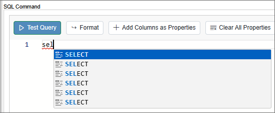
When selecting fields, you can expand the treeview to select the fields by clicking on them in the treeview. When you do so, they are automatically added to the SQL statement, along with necessary punctuation like commas.
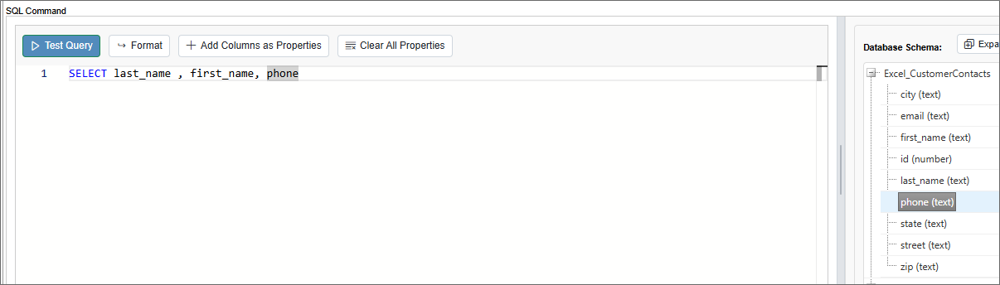
Once you've finished writing your SQL statement, the Format button will apply syntax formatting to your SQL statement automatically, changing this:
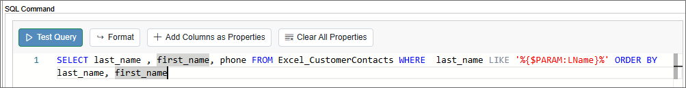
To this:
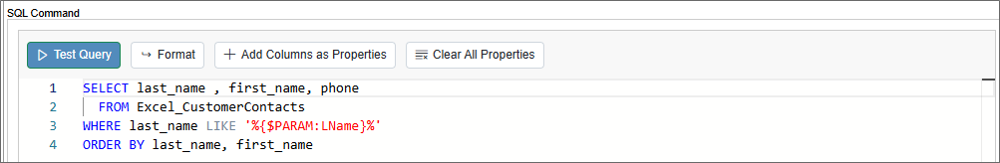
In addition, since the Monaco editor knows what tables and fields are available, error checking is automatically applied. For example, if you enter the incorrect table name, the automatic error checking will display errors in your SQL statement, with error messages that appear whenever you mouse over the error markers.
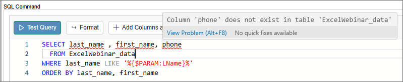
The Monaco editor should make creating SQL Business Values much more convenient.
Most of the properties available on this tab are the same as those in previous versions. Some new properties have been added, and some have been removed, as the user interface has changes to make them unnecessary.
A Content Picker control that enables you to pick the Datasource from which the data will be extracted.
Clicking this button will attempt to connect to the selected Datasource to confirm that the connection to the Datasource works.
Once a valid Datasource has been selected, a list of database tables associated with the Datasource will fill the Treeview in the right pane of the Monaco Editor. If youclick the "+" icon for a table in the Treeview, a list of table columns will appear below the table name.
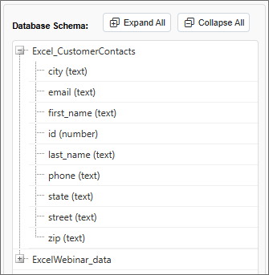
Enter the SQL command that will select the data to be set as the Business Value.
While the system will accept any valid SQL command, BP Logix very strongly recommends hat you limit the use of Business Values to SELECT commands. Updating, deleting, and inserting data should be done separately, through the appropriate Custom Task/Datasource.
Clicking this button will run the SQL query in the SQL Command property against the database to confirm that the query works properly.
For Process Director v5.44.703 and higher, the Test Query button will display up to 100 rows of sample data from a SQL Datasource in the Business Value definition. The data will be displayed in a SQL Test Results section on the page. This section is hidden until the Test Query button is clicked.
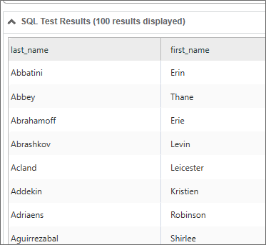
This button, when clicked, will reformat your SQL statement into the recommended formatting for SQL statements.
For Process Director v5.44.703 and higher, this button will automatically add every column returned by the SQL statement as a Business Value property in the Properties section of the page. This feature eliminates the need to manually create each property.
Clicking this button will remove all of the Business Value properties that have been configured, after you confirm this option via a dialog box.
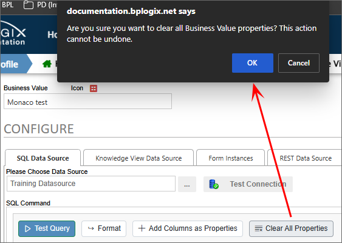
The Knowledge View Data Source tab enables you to select a Knowledge View and apply a filter for returning data from a Knowledge View.
 All Knowledge View columns are available to the Business Value, including those that are marked not to display in the Knowledge View Definition. Also, Knowledge Views that contain sorting criteria will be presented with the same sort order in the Business Value. For v5.32 and higher, a Knowledge View that uses folder navigation to filter the results can now be used as the data source for a Business Value to return all data, and ignore the folder navigation filter.
All Knowledge View columns are available to the Business Value, including those that are marked not to display in the Knowledge View Definition. Also, Knowledge Views that contain sorting criteria will be presented with the same sort order in the Business Value. For v5.32 and higher, a Knowledge View that uses folder navigation to filter the results can now be used as the data source for a Business Value to return all data, and ignore the folder navigation filter.

A Content Picker control that enables you to pick the Knowledge View from which the data will be extracted.
If the Business Value (and underlying Knowledge View) uses a filter Parameter, the Parameter has to be passed to the Knowledge View as a filter string, using the same format you'd use to pass filter strings from a Knowledge View control on a Form, e.g.:
KViewFilter1={PARAMETER:Parameter1Name}.
If you are passing more than one filter parameter, then each parameter passed should be on its own line in the Knowledge View Filter Data text box, e.g.:
KViewFilter1={PARAMETER:Parameter1Name}KViewFilter2={PARAMETER:Parameter2Name}
A User Picker control that enables you to pick the user under whose permissions the Knowledge View will be run. Since regular users may not have permissions to view the Knowledge View, you must pick a user who has appropriate permissions to run the Knowledge View. This will enable users with a lower permissions level to access the Knowledge View data for the Business Value.
Clicking this button will run the Knowledge View to confirm that it works properly.
For users of Process Director v5.13 and higher, Business Values may also use Form Instances as data sources, to retrieve a list of form instances, or form field values. This tab won't appear in earlier versions of the product. For users of Process 5.26 and higher, the Form Instances data source won't return canceled or incomplete form instances, but it will return form instances that were saved for later, or attached to a process.

An Object Picker control that enables you to select the form definition whose instances will be retrieved.
This property will use the Condition Builder to enable you to filter the Business Value to return only form instances that match the specified condition.
This button will, when form conditions have been configured, display the number of form instances that match the configured condition.

The Rest Data Source tab enables you to type a URL for a REST data source into the REST URL text box.
This property enables you to choose how Process Director will parse the REST Response. By default. Process Director will parse both JSON and XML responses as XML, enabling you to use XPath to parse the response. Some JSON, however, can't be converted to XML. In that case, parsing using JSONPath will be required. For Process Director v5.25 and higher, Business Values that use JSONPath to target data from a REST call can use expressions that return a JSON node rather than a string or scalar value.
This property enables you to select a Compliance Datasource that contains the credentials needed to authenticate with the REST service that supplies the data.
This property name was changed to "Compliance" from "Credentials" in v5.44.1000.
Users of Process Director v4.42 and higher also have an Add HTTP Header button that, when clicked, will add one or more rows of Name/Value pairs that will be sent via HTTP header to the REST service.
The Test REST Call button will run the Web Service REST call to confirm that it works properly.
XPath queries can be used against REST data in Business Values, so that Business Value properties can be assigned values returned in the XML response to the query. For instance, let's say you have a REST call to return Zip Codes from a particular city and state, and REST response returned the following XML data:

Using the XPath syntax results/result/zip, you could return a list of the zip codes as a data column in the Business Value, as shown below:

Business Values also support JSON returns and JSONPath, as well.
For more information about XML or JSON REST Services, and how to use XPath and JSONPath to parse REST Responses, please refer to the REST Services topic of the Developer's Guide.
Once you've selected the appropriate data source for the Business Value from the configuration tabs, you can fill out this section by adding the properties that contain the desired Business Value or Values. Simply click the Add Property button to add a value property. The value property contains a number of fields that must be configured.

| Property | Options | Description |
|---|---|---|
| Property Name | The property name will appear as the Business Value property when selecting Business Values from the Condition Builder dropdown menus. | |
| Property Type |
Database Column |
The type of object from which the value is extracted. |
| Property Value (Fields) | List of available fields |
This dropdown control appears when the Database Column, Form Field, or Knowledge View Column Property Type is selected. For the Database Column, the field will appear as a text box into which you can type the desired database column name. For the Form Field, a Content Picker will be displayed that you can use to select the form field to use for the property. For the Knowledge View Column data type, it will be displayed as a dropdown containing a list of Knowledge View columns from which you can select the desired column containing the value. |
| Property Value (Operators) |
Column Data Max From First KVIew Result From Last KView Result |
The type of calculation desired to produce the value. Selecting Column Data provides the raw value of each row, which will result in a multi-row Business Value. The remaining calculation operators will produce a single value, such as a Sum or Average of all values in the returned rows. Additionally, If the Data Source is a Knowledge View you can return the first or the last record in the Knowledge View as a scalar (single) value. This is primarily useful when the Knowledge View results are sorted in the Knowledge View definition. |
The Form Field and Form Instance data types are only available for users of Process Director v5.12.02 and higher.
The properties returned can be ordered by using the UP and Down arrow icons, and deleted by clicking the red "X" icon.

Each property can be accessed in the Condition Builder via the value dropdown menu.

The Parameters section enables you to add Parameters to your queries, and in the case of Business Values based on SQL Datasources, supply a test value to apply when the query is tested.
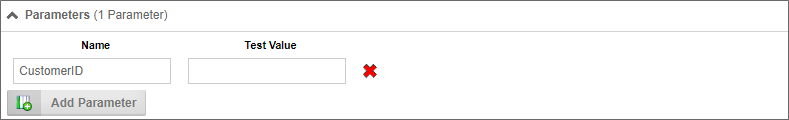
For Process Director v5.26 and higher, Parameters can also be used as column values in both the SQL statement, and the Parameter as a Property Value. For instance, A SQL statement such as "SELECT {$PARAMETER:column} from TABLENAME" can be used to return a column for a Property that uses"{PARAMETER:column}" as the Property Value. Thus, the Parameter can supply the column name for both the SQL Statement and be used as the value of the Property itself. Please note that the Property Name must still be a static value. Similarly, System Variables may be used in the Property values for REST data sources. This enables users to build parameterized filter expressions that can be used to filter the JSONPath/XPath results, e.g.:$.components[?(@.classification >= /Graded/I && @.section = {$PARM:section})].section
The Name column enables you to specify a parameter name.
The Test Value column will only display when the SQL Data Source tab is selected, as only the SQL Datasource supports passing test values to the SQL command. In this column, type the test value you'd like to use when testing the query. Once you've entered a test parameter, you can click the Test Query button on the SQL Data Source tab to test the query with the test parameters you entered.
Note that, in the example above, the SQL statement uses the parameter in the WHERE clause, with the syntax {$Parameter:Year}. The "$" in the system variable instructs Process Director to format the parameter value as a SQL-encoded string.
Click this button to add a new parameter.
Once you've added parameters to a query, every place where you choose the Business Value from the Choose System Variable dialog box, the parameter will display in its own section of the dialog, below the Business Value you select. You can use the parameter portion to select from where the parameter’s value will be derived.
For instance, let's say there's a Form that has a VendorName dropdown control for picking a vendor, which uses the Vendor's name as the display text, and the VendorID as the value. Using the Business Value, you can automatically fill one or more fields with the Vendor's company information by using the VendorName field as the Vendor parameter, and passing the parameter to the Business Value.
In this example, the Set Form Data tab on the Form is configured to set the value of several form fields when the VendorName changes.

If we click on the Build button of the Type property to open the Choose System Variable dialog, we can see the parameter has been set to the value of the ExistingVendor field.

The Type property is identified in the Dropdown menu, and, below the dropdown, we set the "CustomerID" parameter to the value of the CompanyName form field. In this case, the Business Value will return the Customer Type for that specific customer.
In this simple example, we are only returning the Customer Type from the database. We could, however, return any other type of needed information, such as the address, point of contact, phone number, etc., as part of the Business Value as well.
There are two software simulations in this example. The first will walk you through the process of building a Business Value that returns data from an external SQL database. The second will walk through using a Business Value to fill a Dropdown control with Selectable options from a Business Value, then, based on the selection made in the Dropdown control, call a second Business Value to fill other Form fields with Business Value data via the Form's Set Form Data tab.
Creating a New SQL Business Value
Using Business Values on the Fill Dropdowns and Set Form Data tabs of a Form
Business Values: Introduction to the Business Value object.
Business Value Operations: Additional capabilities of Business Values.